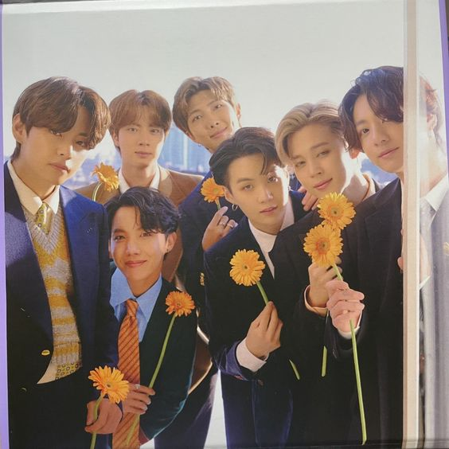
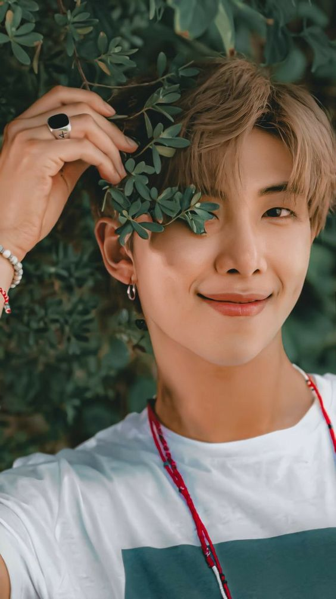
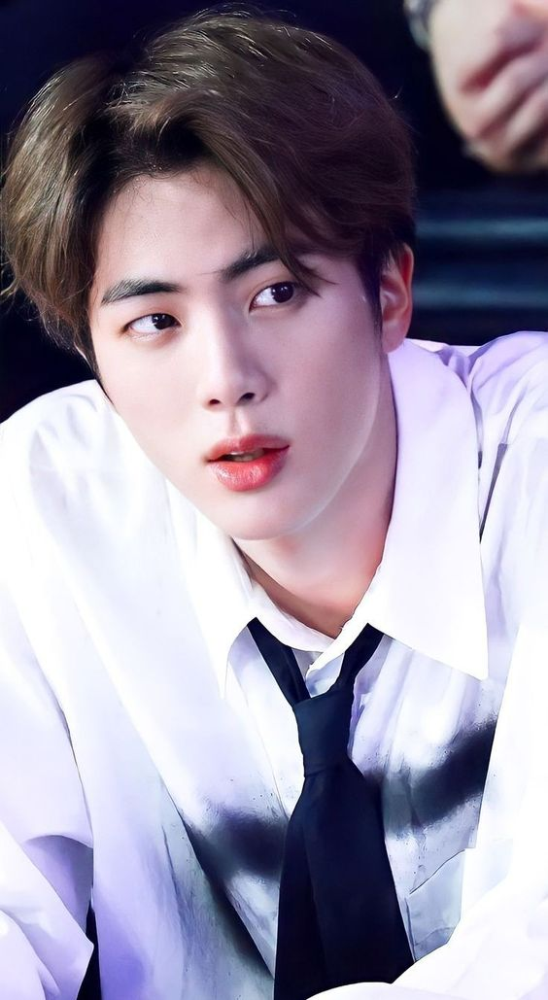
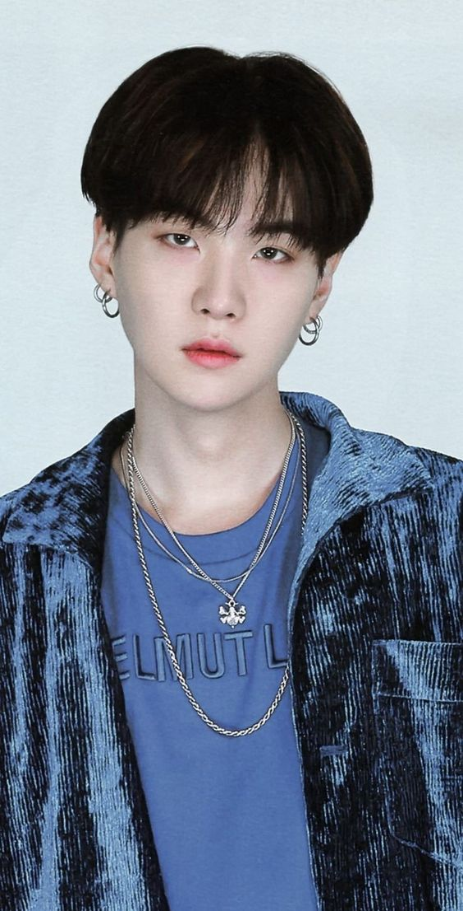
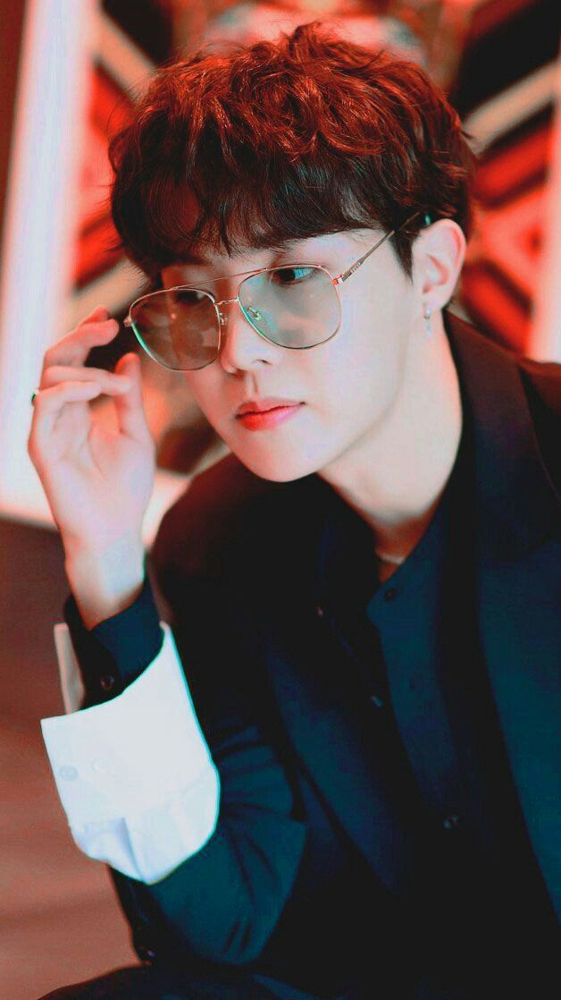
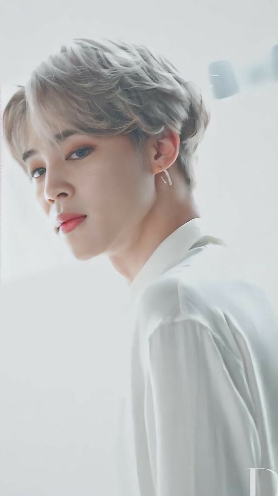
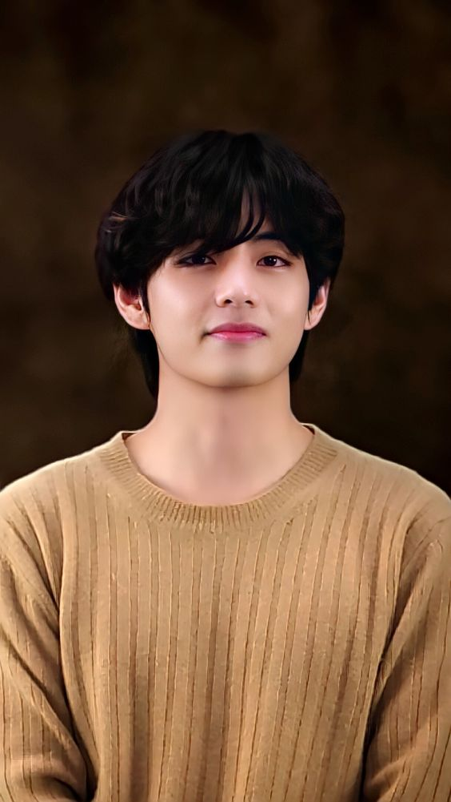
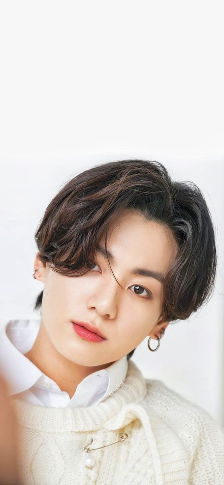

BTS: Everything You Need to Know About the K-Pop Boy Band
WHO/WHAT IS BTS?
Big Hit Music (Korean: 빅히트 뮤직; formerly Big Hit Entertainment) is a South Korean entertainment company established in 2005 by Bang Si-hyuk. It was rebranded as Big Hit Music by its parent company Hybe Corporation, formerly Big Hit Entertainment Co. Ltd., in March 2021. Big Hit Music was divided from Hybe on July 1. As of that date, the company manages soloist Lee Hyun, and boy groups BTS and Tomorrow X Together—it is formerly home to soloist Lim Jeong-hee, and groups 8Eight, 2AM, and Glam.
BANGTAN SONYEONDAN
BTS (Korean: 방탄소년단; RR: Bangtan Sonyeondan), also known as the Bangtan Boys, is a South Korean boy band that was formed in 2010 and debuted in 2013 under Big Hit Entertainment.[5] The septet—consisting of members Jin, Suga, J-Hope, RM, Jimin, V, and Jungkook—co-writes and co-produces much of their own output. Originally a hip hop group, their musical style has evolved to include a wide range of genres. Their lyrics, often focused on personal and social commentary, touch on the themes of mental health, troubles of school-age youth and coming of age, loss, the journey towards loving oneself, and individualism. Their work also often references literature and psychological concepts and includes an alternative universe storyline.
RM – Leader, Main Rapper.
Jin – Vocalist, Visual.
Suga – Lead Rapper.
J-Hope – Lead Rapper, Main Dancer.
Jimin – Lead Vocalist, Main Dancer.
V – Vocalist.
Jungkook – Main Vocalist, Lead Dancer, Sub Rapper, Center/Face of the group, Maknae.
While BTS has made a name for itself as one of the biggest boy bands in history, there was a time when they were nobodies. When they first debuted, BTS and their agency, Big Hit Entertainment, were considered small players in the world of K-pop. As a result, they struggled to get recognised among their more established peers.
However, thanks to the members’ hard work and the support of the Army (the official BTS fan club), the seven members quickly gained popularity in Asia and the rest of the world. In a recent appearance on Korean variety show You Quiz on the Block, MC Yoo Jae-suk called their rise to fame “movie-like”.
The boys shared one dorm room until 2016. On multiple occasions, the members of BTS have shared stories about their first dorm, where all seven of them had to share one room and even one bathroom as trainees.
Despite selling out big stadiums today, BTS didn’t always have an easy time getting people to watch them perform. In an appearance on Korean reality show American Hustle Life, the members said they once had to hand out fliers along LA’s Hollywood Boulevard and invite passers-by to come to a free concert.
It's no secret that BTS has come a long way since their less than the glamorous debut. When BTS first took the stage, they said that they wanted to become "as successful as Big Bang." The public scoffed. Big Bang's domestic and international success had been impressive, to say the least, and it was difficult to imagine any group - worse yet a group not affiliated with the top 3 entertainment agencies (YG, SM, JYP) - living up to their standards.
But as we now know too well, BTS proved everyone wrong and made history by reaching highs that even Big Bang hadn't. The most notable part of their journey is their humble beginnings. Unlike many, if not all, k-pop groups that obtain this degree of popularity, BTS started from essentially nothing, having come from 'BigHit,' a small entertainment agency with not only limited resources and funds but also no previous record of creating a successful k-pop group.
That's how we know that these boys' success is accredited to nobody but themselves. It was hard work, persistence, resilience in addition to the love and support the members had for each other which led them to where they are now.
BTS (방탄소년단; Bangtan Sonyeondan; Beyond The Scene) is a 7-member, South Korean boy group that debuted on June 13, 2013 under Big Hit Entertainment. The members are RM, Jin, SUGA, j-hope, Jimin, V, and Jung Kook.
Kim Nam-joon (Korean: 김남준; born September 12, 1994), better known by his stage name RM (formerly Rap Monster), is a South Korean rapper, songwriter and record producer. He is the leader of the South Korean boy group BTS. In 2015, he released his first solo mixtape, RM. In October 2018, his second mixtape, Mono, was the highest-charting album by a Korean soloist on the Billboard 200 chart, having peaked at number 26. He has recorded with artists such as Wale, Younha, Warren G, Gaeko, Krizz Kaliko, MFBTY, Fall Out Boy, Primary, and Lil Nas X.
Kim Seok-jin was born on December 4, 1992, in Gwacheon, Gyeonggi Province, South Korea. His family consists of his mother, father, and older brother. While in junior high school, Seokjin was scouted by SM Entertainment off the street, but he rejected the offer at the time, believing it to be a scam. Kim has co-written and released three solo tracks with BTS: "Awake" (2016), "Epiphany" (2018), and "Moon" (2020), all of which have charted on South Korea's Gaon Digital Chart. In 2019, Kim released his first independent song, the digital track "Tonight". He also appeared on the 2016 Hwarang: The Poet Warrior Youth soundtrack alongside BTS member V. Kim has received critical praise for his falsetto and emotional range as a singer.
Min Yoon-gi (Korean: 민윤기; born March 9, 1993), better known by his stage names Suga (stylized in all caps) and Agust D, is a South Korean rapper, songwriter and record producer. Managed by Big Hit Music, he debuted as a member of the South Korean boy band BTS in 2013. In 2016, he released his first solo mixtape, Agust D. In 2018, he re-released the mixtape for digital purchase and streaming. The reissue reached number three on Billboard's World Albums Chart. In 2020, he released his second solo mixtape, D-2. Commercially, the mixtape peaked at number 11 on the US Billboard 200, number seven on the UK Albums Chart, and number two on Australia's ARIA Album Chart. The Korea Music Copyright Association attributes over 100 songs to Suga as a songwriter and producer, including Suran's "Wine" which peaked at number two on the Gaon Music Chart and won best Soul/R&B track of the year at the 2017 Melon Music Awards.
Jung Ho-seok (Korean: 정호석; born February 18, 1994), better known by his stage name J-Hope (stylized as j-hope), is a South Korean rapper, songwriter, dancer, and record producer. He made his debut as a member of South Korean boy band BTS in 2013, under Big Hit Entertainment. J-Hope released his first solo mixtape, Hope World, in 2018. The album was met with a positive reception from critics, and peaked at number 38 on the Billboard 200 in the United States, making him the highest-charting solo Korean artist on the ranking at the time. He became the first member of BTS to enter the Billboard Hot 100 as a soloist in 2019, when his single "Chicken Noodle Soup", featuring singer Becky G, debuted at number 81 on the chart.
Park Ji-min (Korean: 박지민) was born on October 13, 1995, in Geumjeong District, Busan, South Korea. His immediate family includes his mother, father, and younger brother. When he was a child, he attended Busan's Hodong Elementary School and Yonsan Middle School.During middle school, he attended Just Dance Academy and learned popping and locking dance.Prior to becoming a trainee, Jimin studied contemporary dance at Busan High School of Arts and was a top student in the modern dance department. After a teacher suggested he audition with an entertainment company, it led him to Big Hit Entertainment. Once he passed the auditions in 2012, he transferred to Korean Arts High School, graduating in 2014. Jimin graduated from Global Cyber University in August 2020, with a major in Broadcasting and Entertainment. As of 2021, he is enrolled at Hanyang Cyber University, pursuing a Master of Business Administration in Advertising and Media.
Kim Tae-hyung (Korean: 김태형; born December 30, 1995), also known by his stage name V, is a South Korean singer and songwriter. He is a vocalist of the South Korean boy band BTS. After graduating from Korean Arts High School in 2014, V enrolled in Global Cyber University—he graduated in August 2020 with a major in Broadcasting and Entertainment. As of 2021, he is enrolled at Hanyang Cyber University, pursuing a Master of Business Administration in Advertising and Media. On October 24, V became one of the youngest recipients of the prestigious fifth-class Hwagwan Order of Cultural Merit medal, awarded to him by the President of South Korea along with the other members of BTS for their role in the spread of culture.
Jeon Jung-kook (Korean: 전정국) was born on September 1, 1997, in Busan, South Korea. His family consists of his parents and an elder brother. He attended Baekyang Elementary and Middle School in Busan. When he became a trainee, he transferred to Singu Middle School in Seoul. Jungkook initially had dreams of becoming a badminton player when he was young, but after seeing G-Dragon perform "Heartbreaker" on television, it influenced him to want to become a singer.In 2011, Jungkook auditioned for the South Korean talent show Superstar K during its auditions in Daegu.Though he was not selected, he received casting offers from seven entertainment companies. He eventually chose to become a trainee under Big Hit Entertainment after seeing RM, now his fellow band member and leader in BTS, perform.To work on his dance skills in preparation for debut, he went to Los Angeles during the summer of 2012 to receive dance training from Movement Lifestyle.In June 2012, he appeared in Jo Kwon's "I'm Da One" music video and also worked as a backup dancer for Glam before his debut. He graduated from School of Performing Arts Seoul, an arts high school, in 2017. In November 2016, he decided to forgo taking the CSATs, Korea's nationwide university entrance exam. In March 2022, he received his degree from Global Cyber University's Department of Broadcasting and Entertainment. He was awarded with the President's Award, the school's highest honor.
